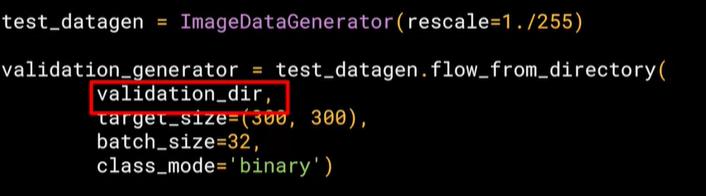

Intro to tensorflow
Hello World of Neural networks
This is written using Python and TensorFlow and an API in TensorFlow called keras.
Keras makes it really easy to define neural networks.
A neural network is basically a set of functions which can learn patterns.
The simplest possible neural network is one that has only one neuron in it, and that's what this line of code does.
In keras, you use the word dense to define a layer of connected neurons.
There's only one dense here.
So there's only one layer and there's only one unit in it, so it's a single neuron.
Successive layers are defined in sequence, hence the word sequential.
You define the shape of what's input to the neural network in the first and in this case the only layer, and you can see that our input shape is super simple. It's just one value.
There are two function roles that you should be aware of though and these are loss functions and optimizers.
This code defines them.
The neural network has no idea of the relationship between X and Y, so it makes a guess.
Say it guesses Y equals 10X minus 10. It will then use the data that it knows about, that's the set of Xs and Ys that we've already seen
to measure how good or how bad its guess was.
The loss function measures this and then gives the data to the optimizer which figures out the next guess.
So the optimizer thinks about how good or how badly the guess was done using the data from the loss function.
Then the logic is that each guess should be better than the one before.
As the guesses get better and better, an accuracy approaches 100 percent, the term convergence is used.
In this case, the loss is mean squared error and the optimizer is SGD which stands for stochastic gradient descent.
If you want to learn more about these particular functions, as well as the other options that might be better in other scenarios, check out the TensorFlow documentation.
Our next step is to represent the known data.
These are the Xs and the Ys that you saw earlier.
The np.array is using a Python library called numpy that makes data representation particularly enlists much easier.
So here you can see we have one list for the Xs and another one for the Ys.
The training takes place in the fit command. Here we're asking the model to figure out how to fit the X values to the Y values.
The epochs equals 500 value means that it will go through the training loop 500 times.
Now you might think it would return 19 because after all Y equals 2X minus 1, and you think it should be 19.
But when you try this in the workbook yourself, you'll see that it will return a value very close to 19 but not exactly 19.
Now why do you think that would be?
Ultimately there are two main reasons.
The first is that you trained it using very little data. There's only six points.
Those six points are linear but there's no guarantee that for every X, the relationship will be Y equals 2X minus 1.
There's a very high probability that Y equals 19 for X equals 10, but the neural network isn't positive.
So it will figure out a realistic value for Y. That's the second main reason.
When using neural networks, as they try to figure out the answers for everything, they deal in probability.
You'll see that a lot and you'll have to adjust how you handle answers to fit. Keep that in mind as you work through the code.
Working through “Hello World” in Tf

research.google.com/seedbank imp
Computer Vision
These images have been scaled down to 28 by 28 pixels.
Now usually, the smaller the better because the computer has less processing to do.
But of course, you need to retain enough information to be sure that the features and the object can still be distinguished.
But of course, you need to retain enough information to be sure that the features and the object can still be distinguished.
So this size does seem to be ideal, and it makes it great for training a neural network.
The images are also in gray scale, so the amount of information is also reduced.
Each pixel can be represented in values from zero to 255 and so it's only one byte per pixel.
With 28 by 28 pixels in an image, only 784 bytes are needed to store the entire image.
https://github.com/zalandoresearch/fashion-mnist

So in the Fashion-MNIST data set, 60,000 of the 70,000 images are used to train the network, and then 10,000 image scan be used to test just how
good or how bad it is performing.
https://ai.google/responsibilities/responsible-ai-practices/
The last layer has 10 neurons in it because we have ten classes of clothing in the dataset.
They should always match. The first layer is a flatten layer with the input shaping 28 by 28.
Now, if you remember our images are 28 by 28, so we're specifying that this is the shape that we should expect the data to be in.
Flatten takes this 28 by 28 square and turns it into a simple linear array.
The interesting stuff happens in the middle layer, sometimes also called a hidden layer.
This is a 128 neurons in it, and I'd like you to think about these as variables in a function.
Maybe call them x1, x2 x3, etc. Now, there exists a rule that incorporates all of these that turns the 784 values of an ankle boot into the value nine, and similar for all of the other 70,000. It's too complex a function for you to see by mapping the images yourself, but that's what a neural net does.
So, for example, if you then say the function was y equals w1 times x1, plus w2 times x2, plus w3 times x3, all the way up to a w128 times x128.
By figuring out the values of w, then y will be nine, when you have the input value of the shoe.
You'll see that it's doing something very, very similar to what we did earlier when we figured out y equals 2x minus one.
In that case the two, was the weight of x. So, I'm saying y equals w1 times x1, etc.


Let's now work through a workbook that has all of the code to do that.
You'll then go through this workbook yourself and if you want you can try some exercises.
Let's start by importing TensorFlow. I'm going to get the fashion MNIST data using tf.kares.datasets.
By calling the load data method, I get training data and labels as well as test data and labels.
For more details on these, check back to the previous video. The data for a particular image is a grid of values from zero to 255 with pixel Grayscale values. Using matplotlib, I can plot these as an image to make it easier to inspect.
I can also print out the raw values so we can see what they look like. Here you can see the raw values for the pixel numbers from zero to 255, and here you can see the actual image. That was for the first image in the array. Let's take a look at the image at index 42 instead, and we can see the different pixel values and the actual graphic.
Our image has values from zero to 255, but neural networks work better with normalized data.
So, let's change it to between zero and one simply by dividing every value by 255.
In Python, you can actually divide an entire array with one line of code like this. So now we design our model. As explained earlier, there's an input layer in the shape of the data and an output layer in the shape of the classes, and one hidden layer that tries to figure out the roles between them.
Now we compile the model to finding the loss function and the optimizer, and the goal of these is as before, to make a guess as to what the relationship is between the input data and the output data, measure how well or how badly it did using the loss function, use the optimizer to generate a new gas and repeat. We can then try to fit the training images to the training labels.
We'll just do it for five epochs to be quick. We spend about 25 seconds training it over five epochs and we end up with a loss of about 0.29.
That means it's pretty accurate in guessing the relationship between the images and their labels.
That's not great, but considering it was done in just 25 seconds with a very basic neural network, it's not bad either.
But a better measure of performance can be seen by trying the test data.
These are images that the network has not yet seen. You would expect performance to be worse, but if it's much worse, you have a problem. As you can see, it's about 0.345 loss, meaning it's a little bit less accurate on the test set. It's not great either, but we know we're doing something right.
Your job now is to go through the workbook, try the exercises and see by tweaking the parameters on the neural network or changing the epochs, if there's a way for you to get it above 0.71 loss accuracy on training data and 0.66 accuracy on test data,

Convolutional Neural Networks
what's really interesting about convolutions is they sound complicated but they're actually quite straightforward,
right?
It's a filter that you pass over an image in the same way as if you're doing sharpening, if you've ever done image processing.
It can spot features within the image as you've mentioned.
With the same paradigm of just data labels, we can let a neural network figure out for itself that it should look for shoe laces and soles or handles in bags and just learn how to detect these things by itself.
Now, one of the things that you would have seen when you looked at the images is that there's a lot of wasted space in each image.
While there are only 784 pixels, it will be interesting to see if there was a way that we could condense the image down to the important features that distinguish what makes it a shoe, or a handbag, or a shirt.
That's where convolutions come in
Repeat this for each neighbor and each corresponding filter value, and would then have the new pixel with the sum of each of
the neighbor values multiplied by the corresponding filter value, and that's a convolution.
The idea here is that some convolutions will change the image in such a way that certain features in the image get emphasized.
that's a very basic introduction to what convolutions do, and when combined with something called pooling,
they can become really powerful.
But simply, pooling is a way of compressing an image. A quick and easy way to do this, is to go over the image of four pixels at a time, i.e, the current pixel and its neighbors underneath and to the right of it.
Of these four, pick the biggest value and keep just that. So, for example, you can see it here.
My 16 pixels on the left are turned into the four pixels on the right, by looking at them in two-by-two grids and picking the biggest value.
This will preserve the features that were highlighted by the convolution, while simultaneously quartering the size of the image.
We have the horizontal and vertical axes.


We're asking keras to generate 64 filters for us.
These filters are 3 by 3, their activation is relu, which means the negative values will be thrown way, and finally the input shape is as before, the 28 by 28. That extra 1 just means that we are tallying using a single byte for color depth. As we saw before our image is our gray scale, so we just use one byte.
Now, of course, you might wonder what the 64 filters are.
It's a little beyond the scope of this class to define them, but they aren't random.
They start with a set of known good filters in a similar way to the pattern fitting that you saw earlier, and the ones that work from that set are learned over time.
Implementing Pooling layers
This next line of code will then create a pooling layer. It's max-pooling because we're going to take the maximum value.
We're saying it's a two-by-two pool, so for every four pixels, the biggest one will survive as shown earlier.
We then add another convolutional layer, and another max-pooling layer so that the network can learn another set of convolutions on top of the existing one, and then again, pool to reduce the size.
So, by the time the image gets to the flatten to go into the dense layers, it's already much smaller.
It's being quartered, and then quartered again. So, its content has been greatly simplified, the goal being that the convolutions will filter it to the features that determine the output.
A really useful method on the model is the model.summary method.
This allows you to inspect the layers of the model, and see the journey of the image through the convolutions, and here is the output.
It's a nice table showing us the layers, and some details about them including the output shape.

it can be a little bit confusing and feel like a bug.
After all, isn't the data 28 by 28, so y is the output, 26 by 26.
The key to this is remembering that the filter is a three by three filter.
Consider what happens when you start scanning through an image starting on the top left.


If your filter is five-by-five for similar reasons, your output will be four smaller on x, and four smaller on y.
So, that's y with a three by three filter, our output from the 28 by 28 image, is now 26 by 26, we've removed that one pixel on x and y, and each of the borders.
So, next is the first of the max-pooling layers. Now, remember we specified it to be two-by-two, thus turning four pixels into one, and having our x and y.
So, now our output gets reduced from 26 by 26, to 13 by 13.
The convolutions will then operate on that, and of course, we lose the one pixel margin as before, so we're down to 11 by 11, add another two-by-two max-pooling to have this rounding down, and went down, down to five-by-five images.
So, now our dense neural network is the same as before, but it's being fed with five-by-five images instead of 28 by 28 ones.
But remember, it's not just one compress five-by-five image instead of the original 28 by 28, there are a number of convolutions per image that we specified, in this case 64. So, there are 64 new images of five-by-five that had been fed in.
Flatten that out and you have 25 pixels times 64, which is 1600. So, you can see that the new flattened layer has 1,600 elements in it, as opposed to the 784 that you had previously. This number is impacted by the parameters that you set when defining the convolutional 2D layers.
Later when you experiment, you'll see what the impact of setting what other values for the number of convolutions will be, and in particular, you can see what happens when you're feeding less than 784 over all pixels in.
Training should be faster, but is there a sweet spot where it's more accurate?
By passing filters over an image to reduce the amount of information, they then allowed the neural network to effectively extract features that can distinguish one class of image from another.
You also saw how pooling compresses the information to make it more manageable. This is a really nice way to improve our image recognition performance.
We're going to do two convolutional layers each with 64 convolution, and each followed by a max pooling layer.
You can see that we defined our convolutions to be three-by-three and our pools to be two-by-two. Let's train.
The first thing you'll notice is that the training is much slower.
For every image, 64 convolutions are being tried, and then the image is compressed and then another 64 convolutions, and then it's compressed again, and then it's passed through the DNN, and that's for 60,000 images that this is happening on each epoch.
So it might take a few minutes instead of a few seconds.
For example, if I change the third image to be one, which looks like a handbag, you'll see that it also has a bright line near the bottom that could look like the soul of the shoes, but by the time it gets through the convolutions, that's lost, and that area for the laces doesn't even show up at all.
So this convolution definitely helps me separate issue from a handbag. Again, if I said it's a two, it appears to be trousers, but the feature that detected something that the shoes had in common fails again.
Also, if I changed my third image back to that for shoe, but I tried a different convolution number, you'll see that for convolution two, it didn't really find any common features.To see commonality in a different image, try images two, three, and five.
These all appear to be trousers. Convolutions two and four seem to detect this vertical feature as something they all have in common.
If I again go to the list and find three labels that are the same, in this case six, I can see what they signify.
When I run it, I can see that they appear to be shirts. Convolution four doesn't do a whole lot, so let's try five.
We can kind of see that the color appears to light up in this case.
https://lodev.org/cgtutor/filtering.html
ConvNet
the core idea of a confinet allows you to implement an algorithm to confine not just handbags right in the middle of the image but anywhere in the image, so it could be carried by someone on the left or the right of a much bigger and, say, a one-megapixel image.
This is 1000 by 1000 pixels. Also for many applications rather than using grayscale, want to use color images-
And the same core ideas but with a bigger dataset, bigger images in similar labels lets you do that.
The image generator class is available in Keras.preprocessing.image.
You can then instantiate an image generator like this. I'm going to pass rescale to it to normalize the data.
You can then call the flow from directory method on it to get it to load images from that directory and its sub-directories.
It's a common mistake that people point the generator at the sub-directory. It will fail in that circumstance.
You should always point it at the directory that contains sub-directories that contain your images.
The names of the sub-directories will be the labels for your images that are contained within them.
So make sure that the directory you're pointing to is the correct one. You put it in the second parameter like this.
Now, images might come in all shapes and sizes and unfortunately for training a neural network, the input data all has to be the same size, so the images will need to be resized to make them consistent.
The nice thing about this code is that the images are resized for you as they're loaded.
Batch_size can be explored more

First of all, you'll notice that there are three sets of convolution pooling layers at the top.
This reflects the higher complexity and size of the images.
Remember our earlier our 28 by 28.5 to 13 and then five before flattening, well, now we have 300 by 300.
So we start at 298 by 298 and then have that etc., etc. until by the end, we're at a 35 by 35 image.
We can even add another couple of layers to this if we wanted to get to the same ballpark size as previously, but we'll keep it at three for now. Another thing to pay attention to is the input shape. We resize their images to be 300 by 300 as they were loaded, but they're also color images.
So there are three bytes per pixel. One byte for the red, one for green, and one for the blue channel, and that's a common 24-bit color pattern. If you're paying really close attention, you can see that the output layer has also changed. Remember before when you created the output layer, you had one neuron per class, but now there's only one neuron for two classes.
That's because we're using a different activation function where sigmoid is great for binary classification, where one class will tend towards
zero and the other class tending towards one. You could use two neurons here if you want, and the same softmax function as before, but for binary this is a bit more efficient.
if we take a look at our model summary, we can see the journey of the image data through the convolutions
The 300 by 300 becomes 298 by 298 after the three by three filter, it gets pulled to 149 by 149 which in turn gets reduced to
73 by 73 after the filter that then gets pulled to 35 by 35, this will then get flattened, so 64 convolutions that are 35
squared and shape will get fed into the DNN. If you multiply 35 by 35 by 64, you get 78,400, and that's the shape of the data once it comes out of the convolutions.
If we had just fed raw 300 by 300 images without the convolutions, that would be over 900,000 values.
So we've already reduced it quite a bit.
When classifying the ten items of fashion, you might remember that your loss function was a categorical cross entropy.
But because we're doing a binary choice here, let's pick a binary_crossentropy instead.
Also, earlier we used an Adam optimizer. Now, you could do that again, but
I thought it would be fun to use the RMSprop, where you can adjust the learning rate to experiment with performance.
The first parameter is the training generator that you set up earlier.
This streams the images from the training directory.
Remember the batch size you used when you created it, it was 20, that's important in the next step.
There are 1,024 images in the training directory, so we're loading them in 128 at a time.
So in order to load them all, we need to do 8 batches. So we set the steps_per_epoch to cover that.
Here we just set the number of epochs to train for. This is a bit more complex, so let's use, say, 15 epochs in this case.
And now we specify the validation set that comes from the validation_generator that we also created earlier.
It had 256 images, and we wanted to handle them in batches of 32, so we will do 8 steps.
And the verbose parameter specifies how much to display while training is going on.
With verbose set to 2, we'll get a little less animation hiding the epoch progress.
Once the model is trained, you will, of course, want to do some prediction on the model. And here's the code to do that, let's look at it piece by piece.
Once the model is trained, you will, of course, want to do some prediction on the model.
And here's the code to do that, let's look at it piece by piece.
So these parts are specific to Colab, they are what gives you the button that you can press to pick one or more images to upload.
The image paths then get loaded into this list called uploaded. The loop then iterates through all of the images in that collection.
And you can load an image and prepare it to input into the model with this code. Take note to ensure that the dimensions match the input dimensions that you specified when designing the model.
You can then call model.predict, passing it the details, and it will return an array of classes.
In the case of binary classification, this will only contain one item with a value close to 0 for one class and close to 1 for the other.
https://gombru.github.io/2018/05/23/cross_entropy_loss/
https://dataaspirant.com/difference-between-softmax-function-and-sigmoid-function/
https://neptune.ai/blog/keras-loss-functions
https://en.wikipedia.org/wiki/Stochastic_gradient_descent#RMSProp